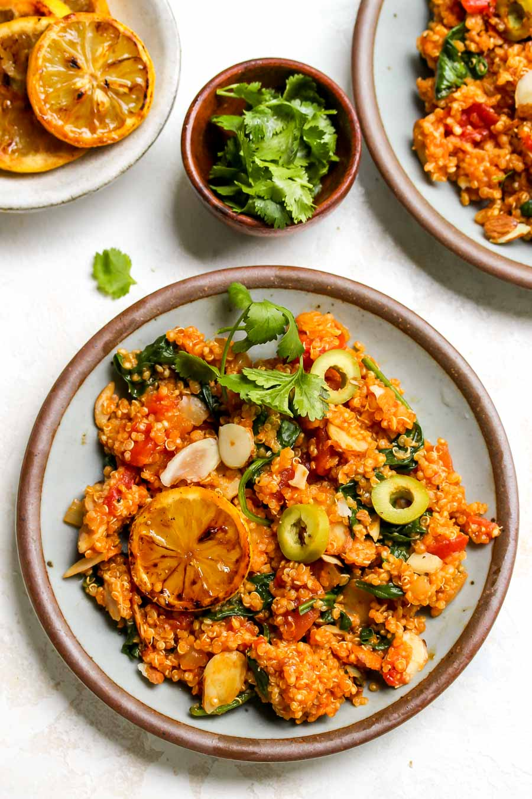

One Pot Moroccan Quinoa is as easy and flavorful as it gets for streamlined weeknight cooking. Gluten free, vegan, and sure to become a family favorite.
Heat butter in a large skillet with a fitted lid over medium-high heat. Once melted, add lemon slices. Cook 2 to 3 minutes, until golden-brown; flip and cook 1 to 2 additional minutes. Transfer to a plate and reduce heat to medium.Heat butter in a large skillet with a fitted lid over medium-high heat. Once melted, add lemon slices. Cook 2 to 3 minutes, until golden-brown; flip and cook 1 to 2 additional minutes. Transfer to a plate and reduce heat to medium.
Stir in diced tomatoes, broth, and salt; increase heat to bring mixture to a boil. Reduce heat to a simmer, cover, and cook until quinoa absorbs most liquid and plumps up, about 15 to 20 minutes.
Uncover, and stir in spinach until greens wilt into mixture, about 1 to 2 minutes. Remove from heat and stir in almonds. Top with olives, fresh herbs, and caramelized lemon slices.
Add oil, shallots, and garlic to pan; cook 3 minutes, until softened. Stir in harissa, cumin, paprika, and quinoa; stir to coat. Cook 1 to 2 minutes in order to lightly toast quinoa.
Stir in diced tomatoes, broth, and salt; increase heat to bring mixture to a boil. Reduce heat to a simmer, cover, and cook until quinoa absorbs most liquid and plumps up, about 15 to 20 minutes.
Uncover, and stir in spinach until greens wilt into mixture, about 1 to 2 minutes. Remove from heat and stir in almonds. Top with olives, fresh herbs, and caramelized lemon slices.